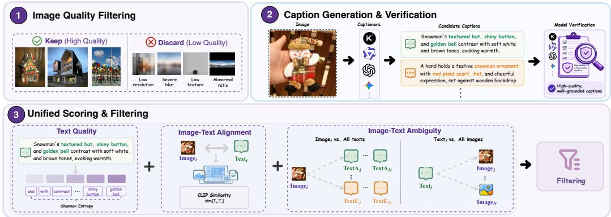
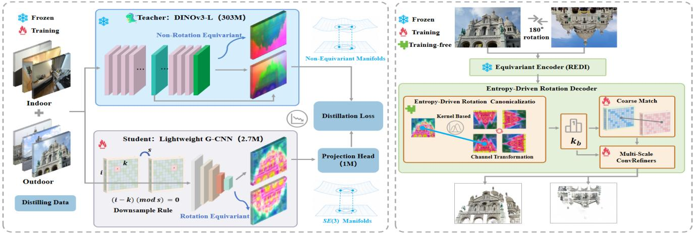
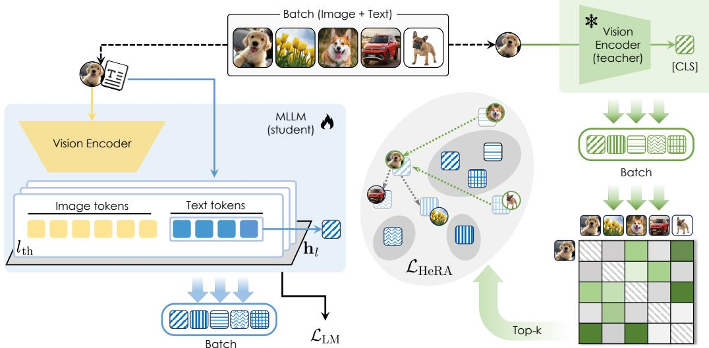
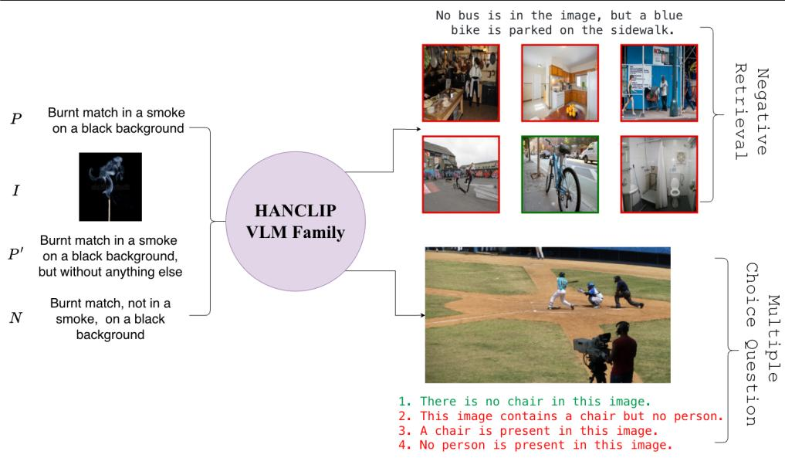
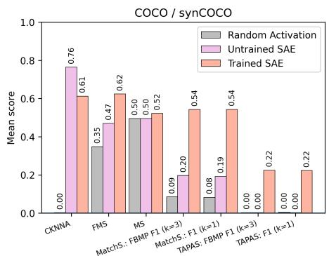

今日主线 · arXiv 新增 / 视觉基础模型预训练
TuringViT：高效 ViT 预训练管线，直接面向 VLM/VLA 视觉编码器
高效 ViT 预训练管线，直接面向 VLM/VLA 视觉编码器。

高效 ViT 预训练管线，直接面向 VLM/VLA 视觉编码器。

高相关；详见方法、贡献和实验边界。
方法：高效 ViT 预训练管线，直接面向 VLM/VLA 视觉编码器

高相关；详见方法、贡献和实验边界。
方法：把 VFM 语义蒸馏到旋转等变编码器，适合看通用 dense 表征如何补几何归纳偏置

高相关；详见方法、贡献和实验边界。
方法：把跨模态对齐从层级推进到 attention-head 级别，和视觉 hallucination 直接相关

高相关；详见方法、贡献和实验边界。
方法：用小规模 quadruplet 数据改造 CLIP 类 embedding 空间以处理否定语义

高相关；详见方法、贡献和实验边界。
方法：给 CLIP/DINOv2 上的 SAE 概念解释提供人类概念标注评估